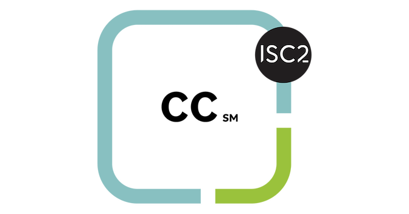
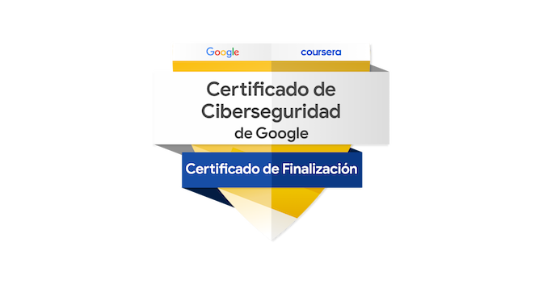
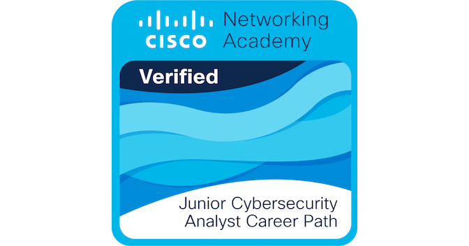

ISC2
Soy Jose Luis Reyes, analista SOC Jr. en formación. Me enfoco en investigar incidentes, analizar tráfico de red y detectar actividad sospechosa con Wireshark, Linux, Splunk y Wazuh.
Documento laboratorios con evidencias y conclusiones prácticas. Complemento mi formación en seguridad con conocimientos de Python, desarrollo web, bases de datos y redes.
Cuento con la certificación Certified in Cybersecurity (CC) de ISC2. Mi objetivo es seguir desarrollando experiencia práctica en detección y respuesta a incidentes.
Formación acreditada

ISC2

Google · Coursera

Cisco

Oracle